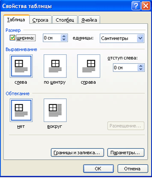

Настройка размеров строк и столбцов
- Выделите строку (столбец, ячейку, всю таблицу) точные значения которой
необходимо установить.
- Щелкните по выделенному правой кнопкой мыши.
- Из появившегося контекстного меню выберите "Свойства таблицы".
- В открывшемся диалоговом окне установите размеры строки (столбца,
ячейки, таблицы).
